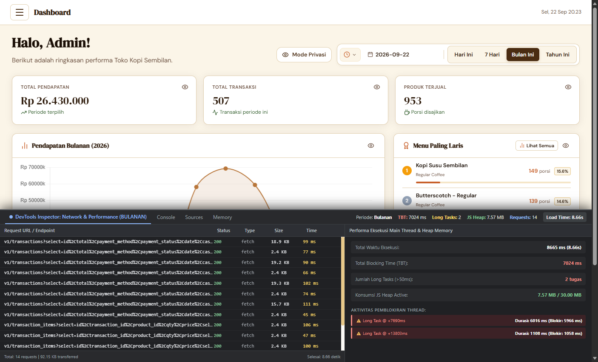
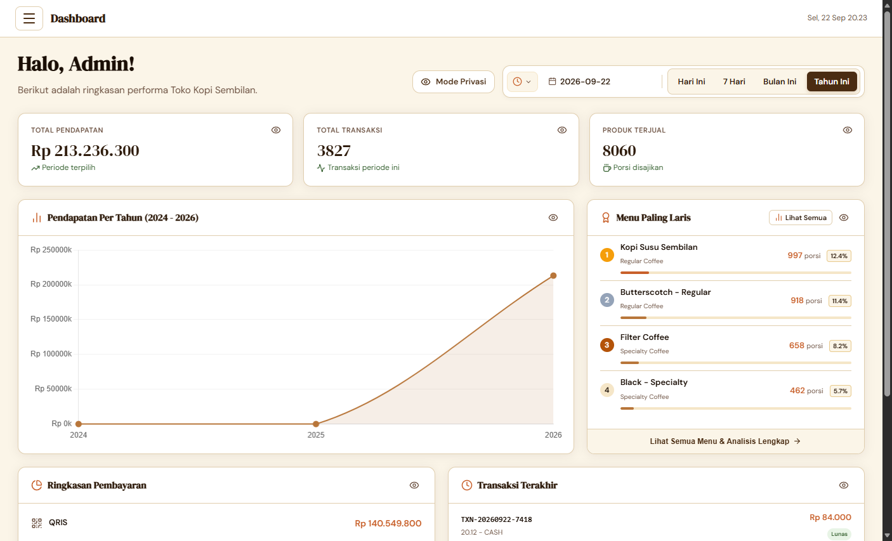
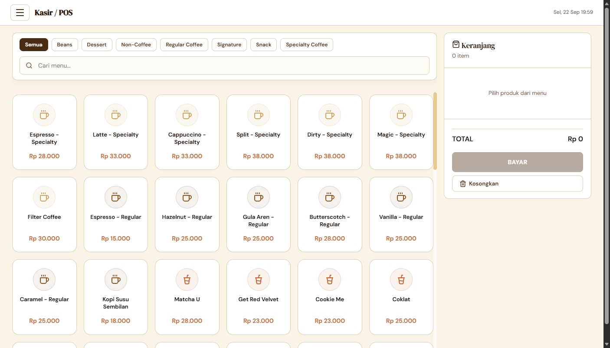
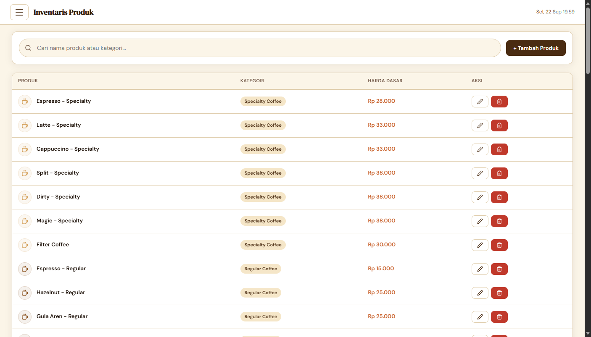

Rekayasa Ulang Aplikasi Point of Sale (POS) Toko Kopi Sembilan dari Vanilla JS ke Svelte
Pengukuran kinerja awal (baseline) ini dilakukan untuk menyediakan data empiris objektif bagi naskah publikasi jurnal ilmiah mengenai dampak rekayasa ulang arsitektur sistem kasir Toko Kopi Sembilan. Pengujian difokuskan pada tiga skenario penggunaan: Katalog Menu Kasir POS, Dashboard Harian, serta Dashboard Agregasi Besar (Bulanan dan Tahunan).
Berikut adalah rincian data hasil uji kinerja menggunakan instrumen browser Chromium DevTools:
| Parameter Pengujian | Kasir POS (83 Menu) | Dashboard: Harian | Dashboard: Bulanan | Dashboard: Tahunan | Standar Core Web Vitals | Evaluasi Kinerja |
|---|---|---|---|---|---|---|
| Volume Data Diolah | 83 Menu Katalog | Data Hari Ini | 507 Transaksi (953 porsi) | 3.827 Transaksi (8.060 porsi) | — | Sesuai Skala |
| Waktu Muat (Load Time) | 783 ms | 783 ms | 8.665 ms (8,67 s) | 5.889 ms (5,89 s) | < 2.500 ms | Melebihi Batas |
| Total Blocking Time (TBT) | 57 ms | 57 ms | 7.024 ms (7,02 s) | 3.752 ms (3,75 s) | < 200 ms | Kritis (Freeze) |
| Jumlah Long Tasks (> 50 ms) | 2 tugas (88ms, 69ms) | 2 tugas | 2 tugas (6.016ms & 1.108ms) | 2 tugas | 0 tugas | Thread Terblokir |
| Long Task Terlama | 88 ms | 88 ms | 6.016 ms (6 detik) | 3.752 ms (3,75 detik) | < 50 ms | Unresponsive |
| Request Jaringan (Supabase) | 40 requests | 40 requests | +14 requests (54 total) | +42 requests (82 total) | Minimal (Bundled) | Terlalu Banyak |
| Payload Data Ditransfer | 85,30 KB | 85,30 KB | 92,15 KB | 211,84 KB | Efisien | Beban Bertambah |
| Konsumsi Memori (JS Heap) | 13,10 MB | 13,10 MB | 7,57 MB | 16,24 MB | Rendah & Terisolasi | Risiko Memory Leak |
innerHTML += ...) yang menghancurkan struktur DOM dan memicu kalkulasi layout berulang (menghabiskan waktu 112 ms per render).




Hasil pengujian baseline ini membuktikan bahwa rekayasa ulang ke framework Svelte memiliki dasar ilmiah yang sangat kuat. Dengan arsitektur reaktif terkompilasi (compiled reactivity), pemangkasan Virtual DOM, dan optimasi pemanggilan data Supabase, seluruh Long Tasks dapat dieliminasi mendekati 0 ms serta menghasilkan waktu respon kasir yang instan.